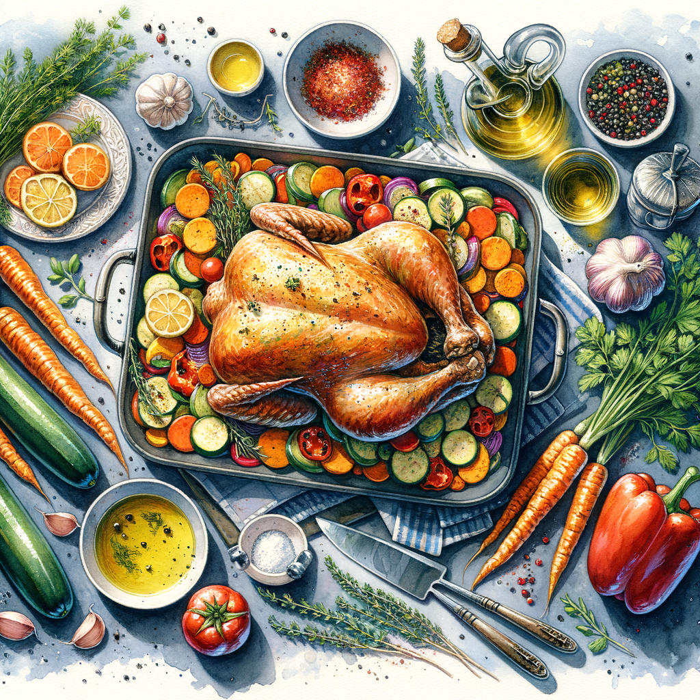

Most Amazing Recipe
**Most Amazing Recipe**
Welcome to my culinary world! I’m Jose Andrés, and I’m thrilled to share with you what I believe to be the most amazing recipe that embodies my passion for food, culture, and hospitality. Cooking is not just about feeding the body; it’s about nourishing the soul and bringing people together.
**Ingredients:**
- 1 whole chicken (preferably organic)
- 2 cups of fresh seasonal vegetables (carrots, bell peppers, zucchini)
- 1 cup of high-quality olive oil
- 4 cloves of garlic, minced
- Fresh herbs (thyme, rosemary, and parsley)
- Salt and pepper to taste
- 1 lemon, juiced
- 1 cup of chicken broth
**Instructions:**
1. **Preparation:** Preheat your oven to 375°F (190°C). Rinse the chicken under cold water and pat it dry with paper towels. This ensures a crispy skin!
2. **Marinate the Chicken:** In a bowl, mix the olive oil, minced garlic, lemon juice, salt, and pepper. Rub this mixture all over the chicken, making sure to get under the skin for maximum flavor. Let it marinate for at least 30 minutes, or ideally overnight in the fridge.
3. **Prepare the Vegetables:** Chop your seasonal vegetables into bite-sized pieces. Toss them in a little olive oil, salt, and pepper. These will roast beautifully alongside the chicken.
4. **Roasting:** Place the marinated chicken in a roasting pan and surround it with the prepared vegetables. Pour the chicken broth into the pan to keep everything moist during cooking. Scatter the fresh herbs over the top for an aromatic touch.
5. **Cook:** Roast in the preheated oven for about 1 hour and 15 minutes, or until the chicken reaches an internal temperature of 165°F (75°C) and the juices run clear. Baste the chicken with the pan juices halfway through for extra flavor.
6. **Serve:** Once done, let the chicken rest for 10 minutes before carving. Serve it on a large platter with the roasted vegetables, and drizzle any remaining pan juices over the top.
**Conclusion:**
This dish is not just a meal; it’s an experience. The aroma that fills your kitchen, the vibrant colors on your plate, and the joy of sharing it with loved ones make this recipe truly special. Food is a universal language, and I hope this recipe inspires you to create and share your own culinary masterpieces. Enjoy every bite and remember, cooking is about love, creativity, and joy!
Bon appétit!
---
Feel free to share your thoughts or any variations you might have tried. I’d love to hear about your culinary adventures!